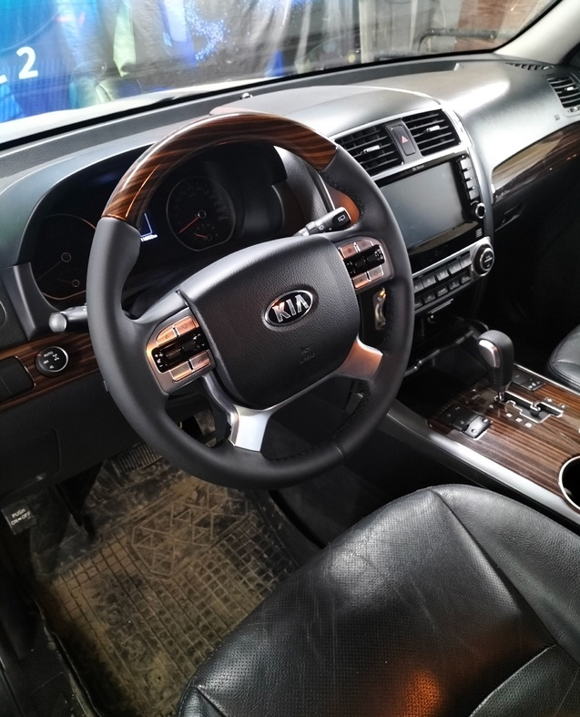
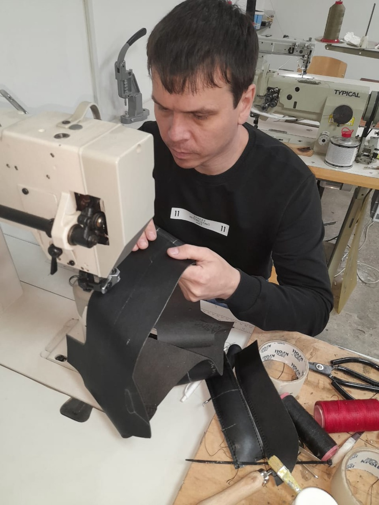
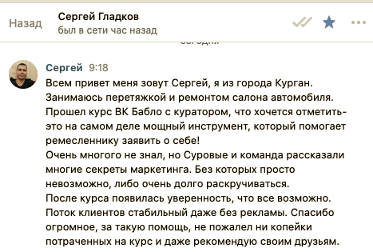
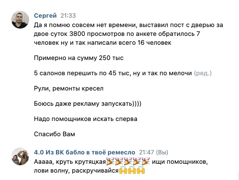

Как избавиться от страха, что у тебя никто не купит и не будет денег на самое необходимое? А ведь именно этот страх держит нас на нелюбимой работе. Не дает заниматься тем, что действительно хочется.
Мы попросили нашего ученика Сергея Гладкова, который занимается перетяжкой салонов авто, рассказать о том, как у него получилось развить свое дело и начать зарабатывать от 200 000 рублей в месяц, закрыть долги более 2 млн рублей, прийти к тому, чтобы работать всего 4 часа в день.
— Расскажи, что было до курса, какой средний доход был в месяц? Сколько клиентов?
До курса был страх, что не смогу заплатить аренду рабочего помещения, а это 25 тыс в мес. Плюс квартира 13 тыс.
— Этот страх был оттого, что не было стабильно клиентов, верно? По сколько ты мог сидеть без клиентов - неделю, две, месяц?
— Да не было клиентов. Не было ни какой стабильности. Сейчас я даже не включаю рекламу. Бывает пару тыс закину в кабинет для новых подписчиков в группу. Подписчик в группу выходит в среднем 30-40 р.
— Огонь, это совсем копейки.То есть на пару тысяч ты получаешь примерно 50-70 новых подписчиков?
— Да. Причем это те люди которым нужны мои услуги. Это просто настройка с курса. Средний чек с такого клиента выходит потом 5-10 тыс рублей.
— Ну из новых 50-ти подписчиков сколько покупают? Процентов 10 покупают? или все 50?
— Это трудно отследить так как, могут и не сразу обратиться. Кто-то долгое время наблюдает за моими работами, а когда появляются финансы обращаются. Но, думаю, больше 10%. У меня было желание зарабатывать 5 тыс в день. Сейчас от 10 получается.
— Окей, если даже по минимуму взять, 10%-20% получается, вкладывая 2к в таргет, можно сказать, что ты окупаешь их в 50 раз – если посчитать, что приходит 10 человек с чеком по 10 тысяч?
— Ну да)

— Круто) Расскажи, каково было работать с куратором, что было полезно, мотивировало ли это тебя? Как считаешь, без куратора получилось бы так же?
— Куратор несомненно нужен. Без куратора можно конечно, но с ним быстрее и понятнее.
— Как сложился коннект с куратором? Были ли ответ быстрыми, полезными?
— Обратная связь была быстрой. Ну и конечно, давала подсказки не прямые, а, так скажем, чтоб мозг включился и сам понял для чего так, а не иначе.
— Рекламу запускаешь редко, поняла) А какие еще действия делаешь для привлечения клиентов? Как часто пишешь посты?
— Раньше писал каждый день. Сейчас раз-два в неделю. Потому что после поста начинается, клиентская активность, не успеваю.
— Посты даются легко? Нравится писать?
— Да сейчас в этом нет проблем, можно пользоваться искусственным интеллектом в телеграмм. Я бывает пользуюсь, когда есть время и настроение.
— Скажи, а ты по-прежнему 1 работаешь или у тебя сейчас есть помощники?
Нет, пока один. Но ищу учеников.
— А можешь поделиться, как изменилась жизнь, когда увеличился доход? Может что-то купил себе? Съездил в путешествие? Что-то смог сделать, чего раньше не мог позволить себе)
— Жизнь изменилась, конечно. Просто было много проблем до этого, которые сейчас решаю благодаря правильному направлению.

— То есть стал спокойнее, уверен в завтрашнем дне? Семья как? Детей может в школу элитную отдал или в секции? Больше внимания им уделяешь? Расскажи, мне всё интересно)
— Пока я рассчитываюсь по долгам, у меня было более 2 млн долгов, к концу лета 2024 г планирую обнулиться.
— Все, остался только вопрос, - примерно сколько за этот год было заработано? Можно в сравнении с прошлым годом)
— Трудно сказать, примерно 200т в месяц.
— С 0 на 200 тыс/месяц, получается?
— Да.
— Какие сложности были во время обучения на нашем курсе? На сколько сложно было учиться? За сколько прошел обучение?
— Да не было проблем вообще, наоборот было очень интересно, как самостоятельно настраиваешь группу и страницу . Я покупал курс в рассрочку на три месяца, но прошел за два, с куратором.
— Ты мега-крут!!! Даже учитывая, что с куратором, за 2 месяца – это большой труд)
Я благодарю тебя за ответы! Желаю тебе дальнейшего роста! Увеличения прибыли, расширения, хороших помощников!!!
Это было начало в 2023 года.
Мы связались с Димой в октябре 2024 года.
— Дим, расскажи, получилось все, как хотел? По долгам обнулился?
— А то! В августе, как планировал отдал последние. Теперь чист)
— Скажи, как сейчас по доходам? Еще подрос?
— Меня все устраивает. Сейчас мой трудо-час от 1500 до 3500 р. Клиентов хватает с головой) Рекламой не пользуюсь практически. Но стал больше позволять себе отдыхать) Работаю 4 часа в день, не больше, в месяц выходит 200 000+ рублей.
Спасибо вам за ваши знания!

